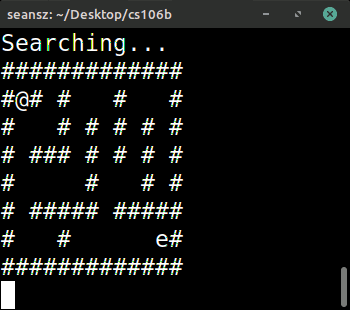
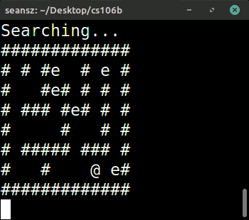

We will be further exploring recursive backtracking in order to solve more difficult problems that cannot be easily solved with iterative approaches.
- Readings: Text 9.1-9.3
- Lecture quiz on Canvas
Lecture Video
Prezi
Here is the Prezi from today's lecture:
Contents
1. Summary and Context: Sequences, Permutations, and Subsets
2. Introduction to Recursive Backtracking
3. Fundamental Backtracking Paradigm: "Choose, Explore, Unchoose"
4. The Basic Anatomy of a Backtracking Algorithm (A Bit More Detail)
5. Generating Subsets with Recursive Backtracking
6. Side Note Regarding the Efficiency of printSubsets()
7. Modifying printSubsets()to Return the Number of Subsets Generated
8. Partitioning with Recursive Backtracking
9. Modified isPartitionable() Function: Tracking our Vector Contents
10. Early Termination in the isPartitionable() Function
11. Side Note: Returning Conditional Expressions from Boolean Functions
12. Side Note: Short-Circuiting
13. What's next?
14. Practice Exercises
Summary and Context: Sequences, Permutations, and Subsets
One of the problems we solved today was that of subset generation. Having seen that, we've now covered recursive algorithms for generating the following:
- sequences (examples: flip a coin n times or roll n six-sided dice)
- permutations (example: give all permutations of the characters in "cat")
- subsets (example: give all possible subsets of the set {a, c, t})
The approaches to each of those form the basis for recursive solutions to plenty of problems and are worth looking over again when you have a chance. We've seen a variety of other recursive algorithms as well -- including string manipulation algorithms, such as our palindrome checker from last Wednesday, and drawing fractal.
Introduction to Recursive Backtracking
Today's new topic was recursive backtracking. The basic idea behind backtracking is that we take a path toward a solution, making choices at different decision points as we go, and if we reach a dead end (where there are no more decision points and we haven't found the solution we're looking for), we backtrack -- i.e., go back to the last point where we made a decision, and make a different choice (if there are any remaining).
The first example I showed today was a quintessential backtracking application: finding a path through a maze. To help visualize the backtracking process, I ran an "animation" program I cooked up that allowed us to watch a little dude wandering through a maze, searching for an exit. At each step, the program prints out whether the dude is Searching... (changing the state of the maze and making recursive calls to explore further) or Backtracking... (returning from dead-end recursive calls):

We discussed the need to keep track of states we had already seen while exploring the maze in order to avoid getting stuck in the throes and woes of infinite recursion. (For that, I dropped breadcrumbs in the maze to keep track of cells we had already explored.) We also saw at one point that backtracking doesn't always find the shortest path from our starting state to a goal:

Fundamental Backtracking Paradigm: "Choose, Explore, Unchoose"
The fundamental backtracking paradigm boils down to the following, which you'll hear us repeating a lot as we discuss backtracking:
- choose
- explore
- unchoose
In the context of the maze program, we have a loop that considers all possible moves (up, down, left, right). It starts by choosing one of those moves and adjusting the board accordingly. It then passes the newly modified board to the function recursively to explore whether that move might lead to an exit in the maze. If not, that call eventually returns, and we move the @ symbol back into position upon doing so (the unchoose phase of backtracking) before moving onto the next iteration of the loop to choose a different move and explore further.
The Basic Anatomy of a Recursive Backtracking Algorithm (A Bit More Detail)
I mentioned a few common features of backtracking algorithms in class, and pointed out that some of these features appear in some backtracking algorithms but not others. Here's a more elaborate discussion of the basic general anatomy of a recursive backtracking algorithm.
- Base Case
We often implement backtracking using recursion. Our base case generally checks whether we've succeeded at finding a solution to the problem. If so, it might perform some action (like printing the result as a string or playing a little animation that celebrates our successful exit from a maze), and/or it might return some value (a boolean indicating success or a value associated with the solution we just found). Either way, the base case gives our algorithm the ability to return to the previous function call. - (Optional) Check for Duplicate States
Sometimes (as with the maze backtracking program I showed in class), we want to explicitly check whether we're in a state that we've already seen. If so, return from this function call rather than allowing ourselves to get stuck in an infinite loop where we constantly bounce back and forth between states we've already seen. (This can be thought of as a base case as well.)
Sometimes, instead of checking for duplicate states explicitly, we just set up the for-loop that makes our recursive calls in a way that ensures only new, unique states are passed to the function with each recursive call. (That was our approach with the subset problem we saw today.) Hence, this step that checks for duplicate states is not always required. - Generate Possible Moves
This is generally implemented as a loop that changes the parameters passed to this function in some way in order to generate all possible states we could reach from our current state. The steps involved with this are:
- Check Validity of Move
In this loop, if we're attempting to make some sort of move (i.e., moving a character in a maze), we might first want to check whether it's valid (i.e., does it send our character into a wall, or a fiery pit of doom, or out-of-bounds in our maze grid?). If so, skip to the next iteration of this loop without making a recursive call. - Change State
Whatever move we're about to make, now's our time to make it. We change the parameters we're passing to our backtracking algorithm to reflect the new state we'll be in after we make this move. This is the "choose" phase of recursive backtracking. - Perform Recursive Descent
We make our recursive call to the backtracking algorithm, passing it the new state we're in with this move (i.e., passing it the parameters we just modified in order to make the current move). This is the "explore" phase of recursive backtracking. - (Optional) Process the Return Value of the Recursive Call
When our recursive function call returns, we might want to capture its return value. It might be returning a boolean indicating whether it found a path to the solution we want. If it did, we might be able to stop making recursive calls. (That was our first approach to today's partitioning problem.) Alternatively, if we're looking for every possible solution to this problem, we might continue searching even if this recursive call already found one solution. (That was our first approach to generating subsets.) Recall that with the subset problem, we eventually modified our function to return how many solutions it had found so far. We captured that return value in our loop and added it to a running count of solutions to be returned from the function later. - (Optional) Undo State Change
If we return from a recursive call, we might need to undo the state change we did in step (b) above before we can go on to the next iteration of this move-generating loop. We saw this is optional in some cases, as with subset generation, where we didn't need to worry about adding elements back to our set because we were creating new subsets with each recursive call rather than passing by reference. This is the "unchoose" phase of recursive backtracking.
Generating Subsets with Recursive Backtracking
For this section, see related Prezi at the top of today's notes.
After discussing some basic principles behind backtracking, we turned to a new problem: generating all subsets of a given set. Given some set, S, we refer to the set of all subsets of S as the power set of S. For example, given the set S = {a, b, c}, the power set of S is a set containing the following:
- {}
- {a}
- {b}
- {c}
- {a, b}
- {b, c}
- {a, c}
- {a, b, c}
Recall that with sets, order does not matter, so we do not need to include {b, a} in addition to {a, b}.
After reviewing an algorithm for generating a power set (see the Prezi at the top of today's notes), we produced the following code:
#include <iostream>
#include "console.h"
using namespace std;
// Takes a string and prints it using set notation, where each character is treated
// as an element in the set. For example, "abc" is printed as: {a, b, c}
void fancyPrint(string s)
{
cout << "{";
for (int i = 0; i < s.length(); i++)
{
cout << s[i];
// We don't need a comma after our last element in the set, but we do want a
// comma after all the others.
if (i != s.length() - 1)
{
cout << ", ";
}
}
cout << "}" << endl;
}
// 'soFar' is the (sub)set we have built so far. 'rest' contains the elements about
// which we have yet to make our binary choice (either include or throw away as we
// generate all possible subsets).
void printSubsets(string soFar, string rest)
{
if (rest.empty())
{
fancyPrint(soFar);
return;
}
// Pluck an element from our set of remaining elements ('rest'). Below, we will
// make a binary choice about whether to include thisOne in the subsets we
// generate.
char thisOne = rest[0];
string newRest = rest.substr(1);
// This is the recursive call where we simply discard thisOne.
printSubsets(soFar, newRest);
// This is the recursive call where we include thisOne in our new subset.
printSubsets(soFar + thisOne, newRest);
}
// For simplicity, we represent our sets as strings. Each character is considered
// an element. For example, the set {a, b, c} is represented as the string "abc".
void printSubsets(string s)
{
printSubsets("", s);
}
int main()
{
printSubsets("abc");
return 0;
}
output:
{}
{c}
{b}
{b, c}
{a}
{a, c}
{a, b}
{a, b, c}
Side Note Regarding the Efficiency of printSubsets()
I mentioned today that because we are creating new strings to pass by value to each of our recursive function calls, there is some unnecessary slowness inherent to our printSubsets() function. One might be inclined to ignore those operations as trivial in a less explosive function, but here those slow concatenation and string copying operations are happening within the context of an exponential algorithm! When dealing with a function that makes O(2n) recursive calls, the runtime impact from each of those calls being O(n) instead of O(1) can become non-trivial very quickly as n increases.
There is, however, an important trade-off at play here. The code above is perhaps more straightforward and followable than an approach that operates on a pass-by-reference vector. The pass-by-reference approach would require some extra bookkeeping: after returning from the recursive call where thisOne was added to soFar, we would have to remove that element from the vector. There would also likely be a third function parameter to keep track of: an integer that tells us how far along we are in the original set passed to the function (since we likely would not modify that one within our recursive calls and would instead focus only on modifying soFar).
Those added layers of complexity might complicate the example unnecessarily and make it less followable in class, and so we have avoided them to make the code more approachable. However, it's good to be aware of these trade-offs -- especially before heading into a technical interview, where the efficiency hits from the pass-by-value parameters and string creation operations could become a topic of discussion.
(Key take-away!) For the purposes of this class, you needn't worry about avoiding the impact those string operations are having on runtime. This is a topic to revisit later, once you're more comfortable with this material, if you're preparing for technical interviews. For now, we want you to focus on the broader picture and writing recursive functions that work and are highly readable.
Modifying printSubsets()to Return the Number of Subsets Generated
Toward the end of class, we returned to the printSubsets() function and modified it to return the number of solutions it found. Below is that modification.
(Important note!) This transformation is very much something I want you to be familiar with and able to implement.
int printSubsets(string soFar, string rest)
{
if (rest.empty())
{
fancyPrint(soFar);
return 1;
}
char thisOne = rest[0];
string newRest = rest.substr(1);
return printSubsets(soFar, newRest) +
printSubsets(soFar + thisOne, newRest);
}
int printSubsets(string s)
{
return printSubsets("", s);
}
int main()
{
cout << printSubsets("abc") << endl;
return 0;
}
Partitioning with Recursive Backtracking
The next problem I presented was the following: Is it possible to partition some vector, V, into two vectors, V1 and V2, such that the sum of the elements in V1 is equal to the sum of the elements in V2? Recall that to be considered a partition, each element from V must occur in exactly one of the vectors V1 or V2. We neither include an element from V in both V1 and V2 nor exclude an element in V from both of those vectors.
For example, if V = {1, 1, 2, 3, 5}, we can partition the elements into V1 = {1, 5} and V2 = {1, 2, 3}. The elements in V1 sum to 6, as do the elements in V2.
The elements in V = {1, 4, 5, 6}, however, cannot be partitioned in such a fashion.
Here is the code we wrote to solve this problem, which returns true if the input vector can be partitioned in such a fashion, false otherwise:
#include <iostream>
#include "console.h"
#include "vector.h"
using namespace std;
// v is the vector of (remaining) elements we have to choose from. sum1 and sum2
// are the sums we have so far for the two (hypothetical) vectors the elements
// are being partitioned into.
bool isPartitionable(Vector<int>& v, int sum1, int sum2)
{
if (v.isEmpty())
{
return sum1 == sum2;
}
// Pull first element out of vector.
int thisOne = v[0];
v.remove(0);
// Below, the first recursive call adds thisOne to first vector sum rather than
// second vector sum. The second recursive call instead adds thisOne to the second
// vector sum.
bool result = isPartitionable(v, sum1 + thisOne, sum2) ||
isPartitionable(v, sum1, sum2 + thisOne);
// We must undo the state change where thisOne was removed from v so that when
// we return to previous calls and make different decisions regarding which
// set earlier elements went into, we can then come back to this one and decide
// where it goes in different branches of our decision tree.
v.insert(0, thisOne);
return result;
}
bool isPartitionable(Vector<int>& v)
{
return isPartitionable(v, 0, 0);
}
int main()
{
Vector<int> v;
v = {1, 1, 2, 3, 5};
cout << isPartitionable(v) << endl; // true
v = {1, 4, 5, 6};
cout << isPartitionable(v) << endl; // false
return 0;
}
Modified isPartitionable() Function: Tracking our Vector Contents
We then modified our isPartitionable() function to keep track of the actual partition vectors being created, rather than just tracking the sums of the elements we would have placed in those vectors.
#include <iostream>
#include "console.h"
#include "vector.h"
using namespace std;
// Returns sum of all elements in a vector of ints.
int vecSum(Vector<int>& v)
{
int sum = 0;
for (int i = 0; i < v.size(); i++)
{
sum += v[i];
}
return sum;
}
// v is the vector of (remaining) elements we have to choose from. sum1 and sum2
// are the sums we have so far for the two (hypothetical) vectors the elements
// are being partitioned into.
bool isPartitionable(Vector<int>& v, Vector<int>& v1, Vector<int>& v2)
{
if (v.isEmpty())
{
int sum1 = vecSum(v1);
int sum2 = vecSum(v2);
if (sum1 == sum2)
{
cout << "v1: " << v1 << endl;
cout << "v2: " << v2 << endl;
}
return sum1 == sum2;
}
// Pull first element out of our source vector.
int thisOne = v[0];
v.remove(0);
// Choose and explore! We add thisOne to v1 rather than v2 and see if this
// leads to a solution.
v1.add(thisOne);
bool result1 = isPartitionable(v, v1, v2);
// Unchoose! We need to remove thisOne from v1 before making the other choice
// (adding it to v2). Otherwise, the element will be in both vectors.
v1.remove(v1.size() - 1);
// Allow for early termination! If we have found a solution, we needn't
// keep exploring.
if (result1)
{
// Even though we are cutting off all exploration, we still need to place
// thisOne back in v so we aren't destroying the input vector as a side
// effect of solving this problem.
v.insert(0, thisOne);
return true;
}
// Choose and explore! We now add thisOne to v2 and check whether that leads
// to a solution.
v2.add(thisOne);
bool result2 = isPartitionable(v, v1, v2);
// Unchoose! We need to remove thisOne from v2. We also need to place thisOne
// back in v so we aren't destroying the input vector as a side effect of
// solving this problem.
v2.remove(v2.size() - 1);
v.insert(0, thisOne);
return result1 || result2;
}
bool isPartitionable(Vector<int>& v)
{
Vector<int> v1;
Vector<int> v2;
return isPartitionable(v, v1, v2);
}
int main()
{
Vector<int> v;
v = {1, 1, 2, 3, 5};
cout << isPartitionable(v) << endl; // true
v = {1, 4, 5, 6};
cout << isPartitionable(v) << endl; // false
return 0;
}
Early Termination in the isPartitionable() Function
(Important note!) Notice that both of our approaches to isPartitionable return true as soon as they find a solution and halt any further exploration! This is a common backtracking idiom that you must be familiar with. For an explanation on how and why the first approach avoids making both recursive calls in all cases, see the section of notes below titled, "Side Note: Short-Circuiting."
Side Note: Returning Conditional Expressions from Boolean Functions
If the return value of some boolean function pivots on the value of some conditional expression, simply return that expression itself rather than using if-else statements. For example:
// AVOID THIS APPROACH
if (sum1 == sum2)
{
return true;
}
else
{
return false;
}
// Prefer this approach instead.
return sum1 == sum2;
Similarly, avoid comparing booleans directly to true:
// AVOID THIS APPROACH
if (myBoolean == true)
{
doSomething();
}
// Prefer this approach instead.
if (myBoolean)
{
doSomething();
}
Avoid comparing booleans directly to false by instead relying on the ! operator to perform an inversion:
// AVOID THIS APPROACH
if (myBoolean == false)
{
doSomething();
}
// Prefer this approach instead.
if (!myBoolean)
{
doSomething();
}
Side Note: Short-Circuiting
Consider the following about the || operator: if we have the expression a || b and we know that a is true, we needn't look at b in order to determine the overall value of the expression. Our result is true no matter what:
- true || true = true
- true || false = true
When C++ evaluates expressions with the || operator, if the left-hand operand is true, it will actually avoid evaluating the right-hand operand in order to save time. This is called short-circuiting.
Consider the impact this might have on the runtime for the following two chunks of code:
Approach #1:
return functionA() || functionB()
Approach #2:
bool resultA = functionA();
bool resultB = functionB();
return resultA || resultB;
We saw this in action in the two approaches to isPartitionable() above. The first version of isPartitionable() has the potential to benefit from short-circuiting, and so its runtime might be dramatically better than that of the second version in some cases. The second version -- given our need to "unchoose" between the two recursive calls it makes -- does not benefit from short-circuiting.
What's next?
On Monday, we'll see further examples of recursive backtracking. After that, we'll shift gears to new topics: sorting, object-oriented programming, structs, and dynamic memory management.
Practice Exercises
1. As always, challenge yourself to replicate the code from today's lecture. Study the material, then take at least a 30-minute break before attempting to replicate the printSubsets() and isPartition() functions from scratch, without referring back to the notes.
2. Be sure to trace through the modified printSubsets() function above to be sure you understand how it is returning the number of subsets it generates. It might help to trace through a small input by hand with a decision tree diagram or to step through a small example with the debugger.
3. Modify printSubsets() to be a pass-by-reference function that operates on a vector of chars. Do this without modifying the contents of the original vector with each recursive call (and do not simply make a copy of that vector that you modify with each recursive call in order to get around this restriction). When adding and removing from the soFar vector, be sure to do so in a computationally efficient way.
Here is an outline to get your started:
#include <iostream>
#include "console.h"
#include "vector.h"
using namespace std;
void printSubsets(Vector<char>& soFar, ... )
{
// CODE ME
}
void printSubsets(Vector<char>& v)
{
Vector<char> soFar;
printSubsets( ??? );
}
int main()
{
Vector<char> v = {'a', 'b', 'c'};
printSubsets(v);
return 0;
}
Highlight for hints to Problem #3:
- You'll want to set up the recursive helper function to take three parameters.
- The first parameter is shown above. The second is a reference to the original vector passed to the function (v).
- It might be helpful to pass an integer as the third parameter.
- Use the third parameter to indicate what index you're on in the original vector, v. When you call your recursive helper function from the wrapper function, pass 0 as the initial value for this parameter. Increment that value with subsequent recursive calls. Your base case will be to stop when that value is equal to v.size().
- For one of your recursive calls to printSubsets(), you will need to add an element to the soFar vector before making that call. Be sure to remove that element when you return from that recursive call.
4. Trace through the first version of isPartitionable() in today's notes (either by hand with a decision tree or with the debugger) and see if you can observe why the function won't work if we remove the following line:
// We must undo the state change where thisOne was removed from v so that when
// we return to previous calls and make different decisions regarding which
// set earlier elements went into, we can then come back to this one and decide
// where it goes in different branches of our decision tree.
v.insert(0, thisOne);
Highlight for hint to Problem #4: If you remove that line of code, the function will fail for v = {1, 4, 5, 6}. The function should return false for that vector, but it will return true with that critical line removed.
5. As always, the textbook and this week's section handout are chock full of great exercises to reinforce this material.